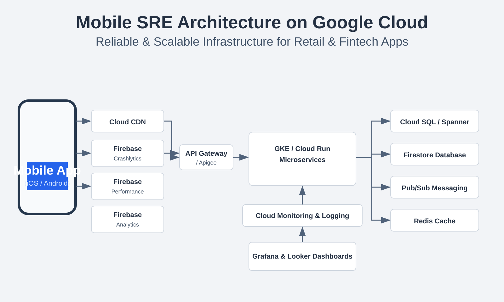

Site Reliability Engineering for Mobile Native App
How teams build reliable iOS and Android experiences with Google Cloud, Firebase, and measurable user adoption intelligence.
For most enterprises, the mobile app is now the primary business channel. If the app crashes at checkout, lags during payment, or fails login during peak traffic, reliability becomes a direct revenue issue. That is where Site Reliability Engineering (SRE) for mobile native apps matters: applying SLOs, observability, automation, and incident response not just to backend APIs, but to the full mobile journey.
Why Mobile Native SRE Requires a Dedicated Strategy
- Mobile clients run on fragmented hardware and OS versions.
- App releases roll out gradually through app stores, delaying emergency fixes.
- Network quality varies drastically across geographies and carriers.
- User perception depends on UI smoothness, screen render speed, and crash-free sessions.
Tools and Technologies Used for Mobile SRE
- Firebase Crashlytics: Crash grouping, issue prioritization, stack traces, release impact.
- Firebase Performance Monitoring: Screen render timings, network latency traces, startup performance.
- Google Cloud Operations Suite: Cloud Monitoring, Logging, Alerting, Trace dashboards.
- Google Kubernetes Engine (GKE): Reliable autoscaling for mobile backend services.
- Cloud Load Balancing + Cloud CDN: Fast and resilient request routing.
- Pub/Sub + Cloud Functions: Event-driven recovery workflows and reliability automations.
- BigQuery: User adoption analytics, retention cohorts, and reliability trend analysis.
- Cloud Deploy + Artifact Registry: Controlled release pipelines with rollback support.
Mobile App Site Reliability Architecture on Google Cloud

A practical reliability architecture includes Cloud Load Balancer at the edge, GKE or Cloud Run for stateless API services, Memorystore for low-latency cache, Cloud SQL/Spanner for persistent data, Pub/Sub for asynchronous event flows, and Cloud Monitoring for golden signals (latency, traffic, errors, saturation). Mobile telemetry from Firebase is mapped with backend logs in BigQuery to correlate app crashes with API performance incidents.
How to Maintain Cloud Infrastructure with Google Cloud
- Define SLOs and error budgets: e.g., 99.95% login API availability and <1.5s p95 checkout latency.
- Use Infrastructure as Code: Terraform for versioned infrastructure and predictable rollouts.
- Automate reliability checks: Synthetic probes for login, cart, payment, and search APIs.
- Harden deployments: Canary releases, progressive rollouts, and auto rollback policies.
- Practice incident readiness: On-call playbooks, paging policies, and game-day drills.
- Control costs while scaling: Rightsizing, autoscaling policies, and cost anomaly alerts.
User Adaptation Rate Monitoring
Reliability without adoption is incomplete. SRE and product analytics should jointly monitor release health and user adaptation.
- DAU/WAU/MAU trends after each release.
- Feature adoption funnels: install → signup → browse → cart → checkout.
- Release cohort retention at D1, D7, D30.
- Drop-off correlation with crashes, API errors, and slow screens.
- Geo and device-segment adoption to prioritize reliability fixes.
Mobile App UI Crash & Screen Performance Management Using Firebase
- Crash-free users KPI: Set reliability targets (for example, >99.8%).
- ANR reduction: Detect frozen UI threads and track regressions by app version.
- Slow/frozen frame tracking: Identify janky screens and optimize rendering paths.
- Custom traces: Measure critical screens such as login, product listing, and payment.
- Release gates: Block production rollout if crash rate exceeds threshold.
Sample Case Studies
An enterprise retail app introduced canary deployments and autoscaling on GKE before a festive sale. Result: 38% lower p95 latency and zero checkout outage during a 4x traffic spike.
A mobile banking team integrated Crashlytics issue triage with on-call alerting and reduced login crash incidents by 62% in two release cycles.
By instrumenting Firebase screen traces and correlating them with API timings, an eCommerce app improved home-screen render time from 2.6s to 1.4s and increased add-to-cart conversion by 11%.
Final Thoughts
Mobile native SRE is not only about uptime. It combines cloud reliability, client stability, and user experience into one measurable engineering discipline. Teams that connect Google Cloud operations, Firebase mobile telemetry, and adoption analytics can ship faster with confidence—and keep users engaged at scale.
← Back to Blogs